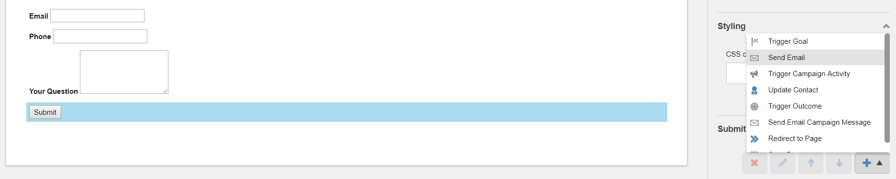

Send Mail¶
With the “Send Email” submit action, a mail can be send out after the submittion of the form.
The action works in collaboration with Email Experience Manager (EXM), the build in email client of Sitecore.
To use the “Send Email” action, you should first create an automated messsage in the EXM module.
How to use the Send Mail action¶
Create a basic form with Sitecore Forms make sure to add a submit button.

On the submit button, go to submit actions and add the send email to fixed address action.
Now, we need to pick the automated message created in EXM. This message will be send upon submittion of the form.
Next, we need to choose who will be the recipients of the mail.
Attachments¶
When using File Upload fields in your form, you can choose to add them as an attachment of the email.